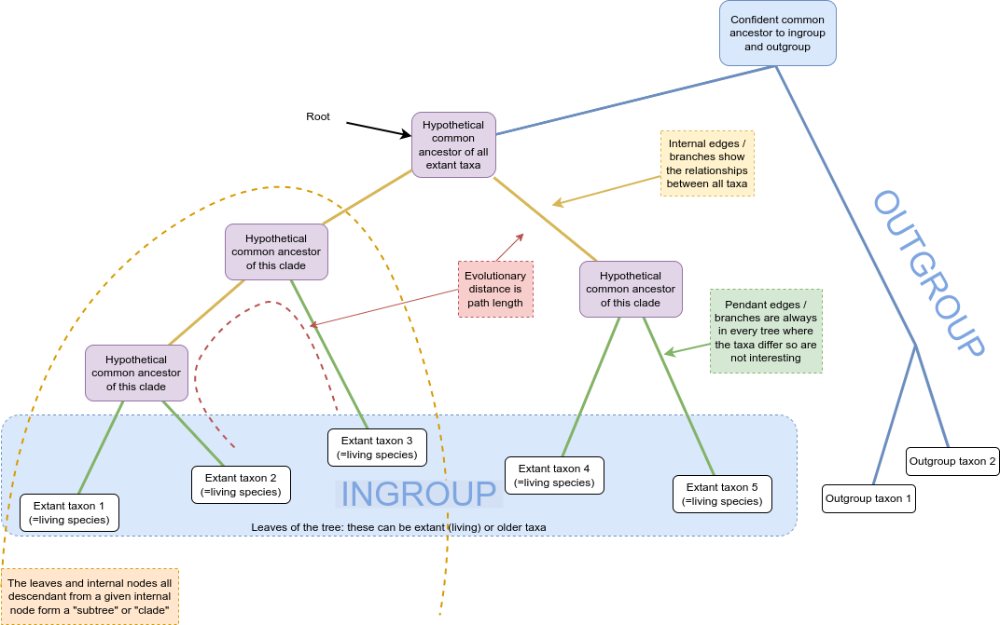

Phylogenetics - Back to Basics - Terminology
Contributors
Authors:  Michael Charleston
Michael Charleston
last_modification Published: May 10, 2024
last_modification Last Updated: Apr 17, 2024
Phylogenetic tree of hexapods
 .right[https://doi.org/10.1371/journal.pone.0109085; CCBY 4.0 DEED license]
.right[https://doi.org/10.1371/journal.pone.0109085; CCBY 4.0 DEED license]
Beginning with the leaves of the tree only

![Schematic of a phylogenetic tree composed of five extant taxa (white boxes) and their hypothetical ancestors (purple boxes). Coloured lines represent relationships between taxa. The root of the tree is a hypothetical common ancestor at the top of the image and extant taxa are at the bottom. The tree branches from this common ancestor twice on the left to form two clades containing extant taxa 1 and 2; or extant taxa 3. The tree branches once to the right to form a clade containing extant taxa 4 and 5.](images/02-rooted-tree.png)

![Schematic of a phylogenetic tree where internal nodes are represented by purple circles and extant taxa by white rectangles. Coloured lines represent the relationship between nodes and taxa. The internal nodes are indicated by an arrow and labelled with “Internal nodes represent hypothetical ancestors”. The root of the tree is at the top of the image. The tree branches multiple times from this node through additional internal nodes forming three clades composed of five extant taxa at the bottom of the image.](images/04-hypothetical-ancestors-only.png)
![Schematic of a phylogenetic tree where internal nodes are represented by purple circles and extant taxa by white rectangles. Coloured lines represent the relationship between nodes and taxa. An arrow and text box indicates that yellow lines are “Internal edges/branches show the relationships between all taxa”. The root of the tree is at the top of the image. The tree branches multiple times from this node through additional internal nodes forming three clades composed of five extant taxa at the bottom of the image.](images/05-internal-branches-only.png)
![Schematic of a phylogenetic tree where internal nodes are represented by purple circles and extant taxa by white rectangles. Coloured lines represent the relationship between nodes and taxa. An arrow and text box indicates that green lines connecting extant taxa to their nearest common ancestor are “Pendant edges/branches are always in every tree where the taxa differ so are not interesting”. The root of the tree is at the top of the image. The tree branches multiple times from this node through additional internal nodes forming three clades composed of five extant taxa at the bottom of the image.](images/06-pendant-branches-only.png)
![Schematic of a phylogenetic tree where internal nodes are represented by purple circles and extant taxa by white rectangles. Coloured lines represent the relationship between nodes and taxa. The root of the tree is at the top of the image. The tree branches multiple times from this node through additional internal nodes forming three clades composed of five extant taxa at the bottom of the image. Red dotted lines are drawn alongside the branches that form a path between extant taxa 2 and 3, and the root and extant taxa 4. Boxed text and red arrows indicate that the dotted lines are “Evolutionary distance is path length”.](images/07-path-lengths-only.png)
![Schematic of a phylogenetic tree where internal nodes are represented by purple circles and extant taxa by white rectangles. Coloured lines represent the relationship between nodes and taxa. The root of the tree is at the top of the image. The tree branches multiple times from the root through additional internal nodes forming three clades composed of five extant taxa at the bottom of the image. A yellow dotted line circles a branch containing three extant taxa and two internal nodes on the left. Text states “The leaves and internal nodes all descendant from a given internal node form a subtree or clade’.](images/08-clades-only.png)


![Schematic of a phylogenetic tree where internal nodes are represented by purple circles and extant taxa by white rectangles. Coloured lines represent the relationship between nodes and taxa. The root of the tree is at the top of the image. The tree branches multiple times from the root through additional internal nodes forming three clades composed of five extant taxa at the bottom of the image. Two additional taxa appear to the right of the tree and are labelled as the outgroup. This outgroup is joined to the tree by blue lines pass through “A confident common ancestor to the ingroup and outgroup”.](images/11-rooted-only.png)

Thank you!
Next - alignment!
Thank you!
This material is the result of a collaborative work. Thanks to the Galaxy Training Network and all the contributors! Tutorial Content is licensed under
Creative Commons Attribution 4.0 International License.
Tutorial Content is licensed under
Creative Commons Attribution 4.0 International License.